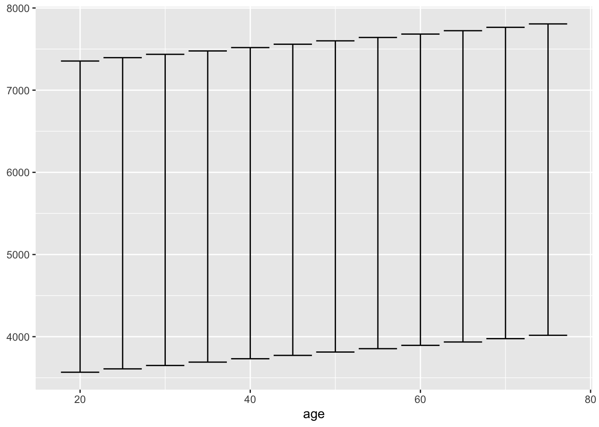
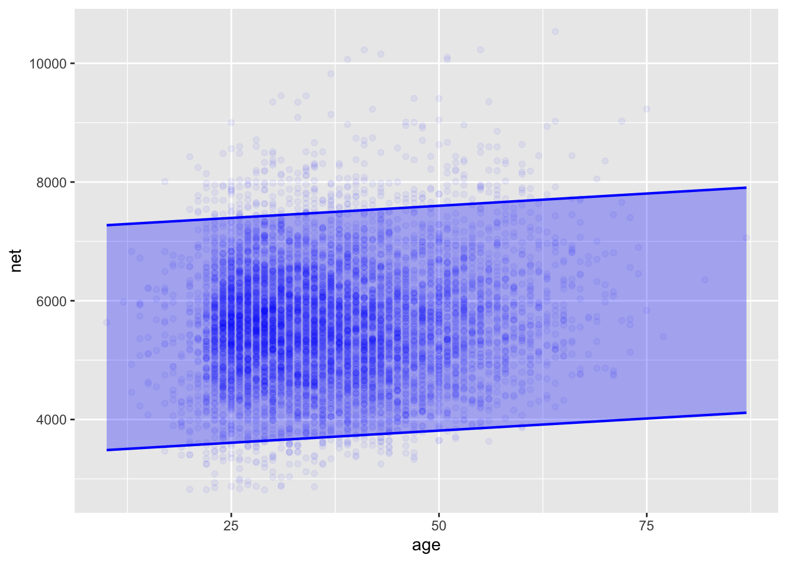
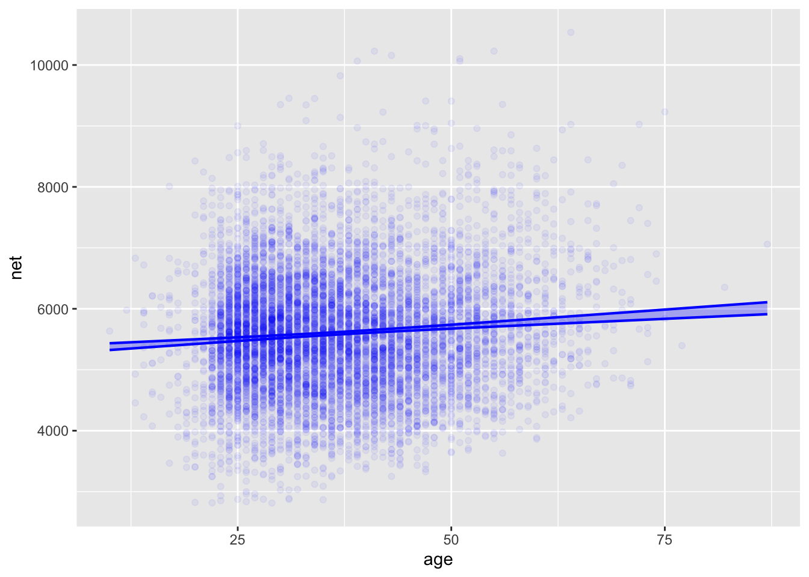

26 Constructing a prediction interval
Lesson 25 introduced predictions in two forms:
- a point quantity, the direct output of the model function.
- the prediction interval, which indicates a range of likely values for the quantity being predicted.
To clarify this distinction, consider this three-step procedure that trains a model, extracts the model function, and applies the model function to inputs to generate a prediction in point-estimate form.
In the first line, lm() is used to train a model.
The second line, Time_mod_fun <- makeFun(Time_mod), creates and names a function that implements the input/output relationship defined by the model.
The third line uses the ordinary parentheses notation to apply the newly created Time_mod_fun() to specific values of the argument, generating the corresponding output value.
# applying the function to arguments
Time_mod_fun(distance=10, climb=500) 1
3372.985 In these Lessons, whenever we refer to the “model function,” we mean a model translated into the form of a function. The point is to emphasize the input-to-output relationship implied by a model.
In topics like calculus, functions are the primary objects of interest. Calculus operations such as differentiation, anti-differentiation, and zero-finding always act on functions. However, calculus software hardly ever lets one interrogate a function to find properties such as the range, domain, continuity, and asymptotes. Instead, students are expected to look at the formula of a function to deduce these properties.
In statistical modeling, model functions are not an object of primary interest. Why? Because there are several other properties of models are essential to interpreting the results of using a model. These properties include the residuals from model training and more abstract and advanced ones, such as the model’s “degrees of freedom.” People design software to construct model objects—for us, objects of class “lm”—from which these properties can be accessed and translated by software into valuable forms.
For this reason, there is no need to construct the model function explicitly. Consequently, one generally does not use the function application syntax directly as we did with Time_mod_fun(distance=10, climb=500). Instead, one invokes the model function with other software that can use all the information in a model object. For us, that software will be the model_eval() extractor.
Use model_eval() as you do the other familiar extractors such as coef() or conf_interval(). To generate a prediction, give model_eval() arguments specifying the desired inputs to use with the model function.
Time_mod %>% model_eval(distance=10, climb=500) | distance | climb | .output | .lwr | .upr |
|---|---|---|---|---|
| 10 | 500 | 3372.985 | 1664.41 | 5081.56 |
Notice that the result from the above command includes a column .output which will always be an exact match to the output the model function will have generated. However, there is more to the output of model_eval(). The interval form of the prediction is of particular importance, contained in the columns .lwr and .upr.
Many people prefer a point prediction, possibly because the single number suggests a single, correct answer, which is somehow emotionally comforting. But the comfort is unjustified.
The proper form for a prediction is a prediction interval: two numbers bounding the lower and upper limits for the likely outcome. For the hill-racing model, the point prediction is 3372.985 seconds, which is a running time of just under one hour. Nothing about this single number even tells us how many digits are appropriate. The prediction interval tells a different story. The interval, 1700 to 5100 seconds, conveys the appropriate uncertainty in the prediction.
Where does the prediction interval come from
The prediction interval has two distinct components:
- The uncertainty in the model function and hence in the output of the model function.
- The size of the residuals found when training the model.
Consider first the model function. For the running-time model, we can construct the model function from the coefficients of the linear model. These are:
Time_mod %>% coef()(Intercept) distance climb
-469.976937 253.808295 2.609758 The algebraic expression for the model function is straightforward: \[t(d, c) \equiv -470 + 254 d + 2.61 c\ .\]
The statistical thinker knows that such coefficients have uncertainty due to sampling variation. That uncertainty is, of course, quantified by the confidence interval.
Time_mod %>% conf_interval()| term | .lwr | .upr |
|---|---|---|
| (Intercept) | -533.432471 | -406.521402 |
| distance | 246.387096 | 261.229494 |
| climb | 2.493307 | 2.726209 |
Since we cannot legitimately claim to know the values of the coefficients any better than indicated by these confidence intervals, we ought to temper our claims about the model function so that it reflects the uncertainty in the coefficients. For instance, we might provide an interval for the model output, using in an “upper” function the high ends of the confidence intervals on the coefficients and another “lower” function that uses the low ends of the confidence interval. Like this:
\[t_{upr}(d,c) \equiv -407 + 261 d + 2.72 c\\ t_{lwr}(d,c) \equiv -533 + 246 d + 2.49 c\]
Evaluate both the lower and upper functions to get an interval on the model output. That would give us \(t_{lwr}(10, 500) = 3172\) and \(t_{upr}(10, 500) = 3569\).
This idea for generating the “lower” and “upper” functions has the right spirit but is not on target mathematically. The reason is that using the low end of the confidence interval for all coefficients is overly pessimistic; usually, the uncertainty in the different coefficients cancels out to some extent.
The mathematics for the correct “lower” and “upper” functions are well understood but too advanced for the general reader. For our purposes, it suffices to know that model_eval() knows how to do the calculations correctly.
The prediction interval produced by model_eval() includes both components (1) and (2) listed above. Insofar as we are interested in component (1) in isolation, the correct sort of interval—a confidence interval—can be requested from model_eval().
Time_mod %>%
model_eval(distance=10, climb=500, interval="confidence")| distance | climb | .output | .lwr | .upr |
|---|---|---|---|---|
| 10 | 500 | 3372.985 | 3335.264 | 3410.706 |
This report shows that the confidence interval on the model output—that is, just component (1) of the prediction interval—is pretty narrow: 3335 seconds to 3411 seconds, or, in plus-or-minus format, \(3373 \pm 38\) seconds.
The prediction interval—that is, the sum of components (1) and (2)—is comparatively huge: 1700 to 5100 seconds or, in plus-or-minus format, \(3400 \pm 1700\) seconds. That is almost 50 times wider than the confidence interval.
Why is the prediction interval so much more comprehensive than the confidence interval? The confidence interval reports on the sampling variation of a model constructed as an average over all the data, the \(n=2236\) participants recorded in the Hill_racing data frame. However, each runner in Hill_racing has their own individual time: not an average but just for the individual. The individual value might be larger or smaller than the average. How much larger or smaller? The residuals for the model provide this information. As always, we can measure the individual-to-individual variation with the standard deviation.
Time_mod %>% model_eval() %>% summarize(se_residuals = sd(.resid))Using training data as input to model_eval().| se_residuals |
|---|
| 870.6588 |
Keeping in mind that the overall spread of the residuals is plus-or-minus “twice” the standard deviation of the residuals, we can say that the residuals indicate an additional uncertainty in the prediction for a runner of about \(\pm 1700\) seconds. This \(\pm 1700\) second is our estimate of the noise in the measurements. In contrast, the confidence interval is about the sampling variation in the signal.
In this case, the prediction interval is wholly dominated by noise; the sampling variability contributes only a tiny amount of additional uncertainty.
We shift the running scene from Scotland to Washington, DC. The race now is a single 10-miler with almost 9000 registered participants. We wish to predict the running time of an individual based on his or her age.
Age_mod <- lm(net ~ age, data = TenMileRace)We can see the prediction interval for an individual runner using mod_eval(). For example, here it is for a 23-year-old.
Age_mod %>% model_eval(age=23)| age | .output | .lwr | .upr |
|---|---|---|---|
| 23 | 5485.587 | 3592.054 | 7379.119 |
We can also calculate the prediction interval for several different ages and graph out the results with the “errorbar” glyph:
Age_mod %>%
model_eval(age=c(20,25,30,35,40,45,50,55,60,65,70,75)) %>%
ggplot(aes(x=age)) +
geom_errorbar(aes(ymin=.lwr, ymax=.upr))
For convenience, the model_plot() function will do this work for us, plotting the prediction interval along with the training data. We can also direct model_plot() to show the confidence interval.
### #| column: page-right
model_plot(Age_mod, x=age, interval="prediction", data_alpha=0.05)
model_plot(Age_mod, x=age, interval="confidence", data_alpha=0.05)

net ~ age.Since we are looking at the intervals as a function of an input variable, what we formerly showed using the “errorbar” glyph is now shown using a ribbon or band.
Notice that the prediction interval covers almost all of the data points. There are hundreds of data points outside the interval, but with almost 9000 rows in the TenMileRace data frame, an interval that covers 95% of the data will have about 450 rows outside the interval.
Such a prediction interval is of little use; it cannot give a precise prediction about the running time of an individual. The honest prediction of an individual’s outcome needs to reflect the spread of all the individuals with a similar age.
In contrast, the confidence band on the model function is pleasingly narrow and precise. It covers only a tiny fraction of the raw data. For this very reason, the confidence interval is inappropriate for presenting a prediction. As always, confidence intervals only show general trends in the data, not the range of results for an individual prediction. For instance, Figure 26.1 shows a clear upward trend in running time with age. There is no flat or negatively sloping line compatible with the confidence interval.
To summarize:
- When making a prediction, report a prediction interval.
- The prediction interval is always larger than the confidence interval and is usually much larger.
The confidence interval is not for predictions. Use a confidence interval when looking at an effect size. Graphically, the confidence interval is to indicate whether there is an overall trend in the model.